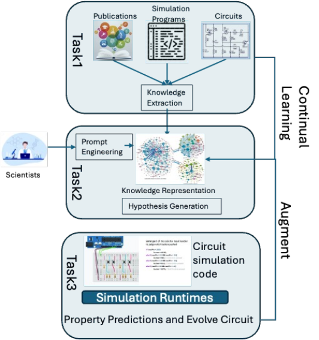
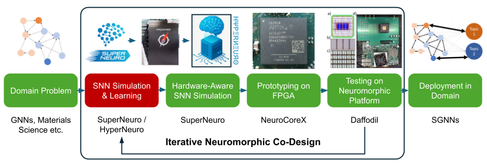

KNIGHT
Knowledge-Graph Methods for Neuromorphic Computing Co-Design
The problem: energy walls and knowledge silos
Neuromorphic computing promises orders-of-magnitude efficiency gains over conventional AI hardware – the human brain runs roughly 86 billion neurons and 100 trillion synapses on about 20 W, while the von Neumann bottleneck of moving data between CPU and memory consumes 60-80% of the energy in today’s deep learning workloads. Realizing that promise requires iterative co-design across neuroscience, machine learning, circuit design, device materials, and computer architecture: a learning rule choice constrains device variability tolerances, a circuit topology bounds achievable network architectures, and a fabrication constraint can rule out an entire algorithmic family.
That knowledge is scattered across thousands of publications, and it rarely crosses domain boundaries on its own. An analysis of papers spanning neuroscience, machine learning, and neuromorphic computing found 8,771 citation events but only 6 that bridge across all three domains – the cross-domain synthesis that co-design depends on is almost never done by the literature itself, and naive LLMs and vector-based RAG cannot reliably fill the gap: they hallucinate, lose provenance, and cannot traverse the multi-hop chains (device -> circuit -> learning rule -> performance) that hardware-aware reasoning requires.
KNIGHT’s central thesis is that structured knowledge graphs are the connective tissue across the neuromorphic co-design stack – from SuperNeuroMAT algorithm simulation, to NeuroCoreX FPGA emulation, to Daffodil memristive device characterization.

Three complementary research threads
KNIGHT is built as three progressively deeper systems, each extending the last – from general-purpose scientific KG construction, to cross-domain agentic reasoning, to full multimodal co-design automation.
1. NeuKRAG – scalable scientific KG construction & GraphRAG
(NICE 2026 paper / SciKRAG framework)
NeuKRAG is a general-purpose pipeline for constructing scientific knowledge graphs from technical literature and querying them through GraphRAG. Documents are processed through an 8-stage pipeline – extract -> merge -> postmerge -> dedupe -> cluster -> embed -> ontology -> check – using open, lightweight LLMs (gpt-oss-120b, llama3.3:70b, gpt-oss-20b, ibm/granite4:small-h) served across distributed vLLM and Ollama backends. The GraphRAG query layer combines FAISS vector similarity with k-hop graph traversal and role-specific LLM routing (extractor -> ranker -> reasoner) to produce responses richer than naive LLM baselines, with every claim traceable to a source paper and section. This system generalizes beyond neuromorphics to any technical domain requiring structured, explainable scientific reasoning.
2. NeuKRAG (domain) & NeuKReAct – cross-domain agentic hypothesis generation
Applied specifically to neuromorphic literature, the KG-RAG approach exposes multi-hop relationships (e.g., device variability -> STDP robustness -> algorithm selection) that vector search alone cannot surface. NeuKReAct extends this into an agentic reasoning framework: a multi-corpus KG spans neuroscience, machine learning, and neuromorphic computing – A DSPy ReAct agent works through a 7-stage locked blackboard – lit_search -> neuron_choice -> synapse_choice -> learning_rule -> architecture -> implementation -> evaluation – using 11 specialized retrieval tools, then an execution head turns the committed design into a structured Markdown design document and a runnable SNNTorch codebase, completed end-to-end by an off-the-shelf coding agent with an auto-verification retry loop. NeuKReAct also introduces a combinatorial creativity score N(R), the mean shortest-path distance between retrieved papers in the citation graph, to quantify cross-domain novelty.
3. Neuromorphic Codesign Agent – multimodal KG & constrained generation
The Neuromorphic Codesign Agent scales the KG and extends it with multimodal nodes: typed concept nodes, LaTeX formula nodes, validated Python code snippets, and validated SPICE netlists, linked by typed cross-modal edges (DEFINED_BY, HAS_CODE, HAS_NETLIST, DERIVED_FROM) with cross-document deduplication merges creating one connected substrate instead of per-document silos. An interactive Streamlit application runs a four-strategy hypothesis engine (limitation-, analogy-, gap-, and conflict-driven generation) with embedding-based deduplication and five-dimensional scoring (novelty, groundedness, feasibility, testability, internal consistency), then produces constraint-driven code and circuit generation: a seven-check validation loop for Python (raising constraint compliance from ~70% to ~88%) and a five-check validation loop with six post-processing stages for SPICE netlists – closing the loop from biological principle to a simulation-ready hardware circuit.

The KNIGHT stack
| Layer | System | Contribution | Corpus |
|---|---|---|---|
| 1 - KG Foundation | NeuKRAG | Structured, queryable KG with GraphRAG retrieval | 2,396 neuromorphic papers |
| 2 - Cross-Domain Reasoning | NeuKReAct | Multi-corpus agentic planning + creativity metrics | 3,658 papers (neuroscience + ML + neuromorphic) |
| 3 - Full Co-Design | Neuromorphic Codesign Agent | Multimodal KG -> hypothesis -> code -> SPICE circuit | 5,999 PDFs |
The common thread across all three layers is a structured knowledge graph that stays queryable, provenance-tracked, and explainable as it grows from text triples to a multimodal substrate spanning formulas, code, and circuits.
Learn more
Supporting visuals and extended narrative for this overview are drawn from project presentations and posters – see the Community & Activities page for the DOE ASCR PI Meeting poster, workshop deck, and related talks. Full technical detail is available on the Publications page, and the underlying software is described on the Software page.
921,545 triples - NeuKRAG (2,396 papers)
3,658 papers - NeuKReAct multi-corpus KG
5,999 PDFs - Codesign Agent multimodal KG
165,287 cross-modal edges (concept<->formula<->code<->netlist)